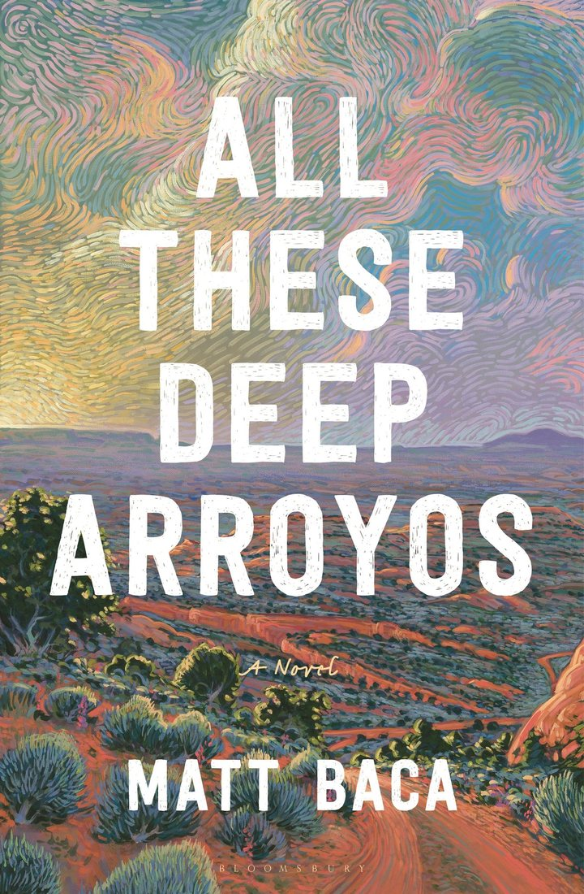

Preorder All These Deep Arroyos
“In All These Deep Arroyos, Matt Baca has crafted a beautiful and stirring debut novel that sings with the winds of the high desert. Told with heart and unflinching empathy, it is a glorious addition to the literature of Southern Colorado and New Mexico.”
—Kali Fajardo-Anstine, author of Woman of Light
Or ask your favorite local bookstore to order it: ISBN 978-1-63973-775-8.